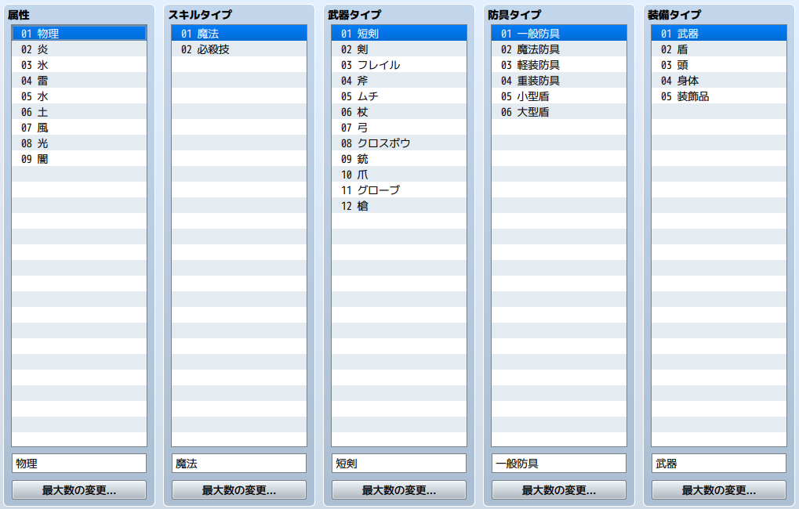

タイプの設定
データの役割
タイプのデータは、ゲームの属性、スキルタイプ、武器タイプ、防具タイプ装備タイプの名称の設定をまとめたものです。ここで設定したタイプが各設定画面のタイプに反映されます。
設定項目の内容

属性
属性名の一覧です。名称を変更するにはリスト内で対象の項目をクリックで選択し、下の欄に名称を入力します。項目数を増減するには［最大数の変更］をクリックし、項目数を指定します。
この名称はエディター上で選択する際に使われます。属性の具体的な内容は、スキルや武器などのデータで設定します。
スキルタイプ
スキルデータの［スキルタイプ］で指定する種別前の一覧です。名称の変更方法などは［属性］の設定項目と同じです。
武器タイプ
武器データの［武器タイプ］で指定する種別名の一覧です。名称の変更方法などは［属性］の設定項目と同じです。
防具タイプ
防具データの［防具タイプ］で指定する種別名の一覧です。名称の変更方法などは［属性］の設定項目と同じです。
装備タイプ
防具データの［装備タイプ］で指定する種別名の一覧です。名称の変更方法などは［属性］の設定項目と同じです。